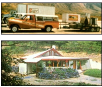

Ned Ryan Doyle
MOTHER's research team hits the highways in their fleet of alcohol- powered vehicles, with their portable still and low-cost solar systems trailer (Montana, 1982); MOTHER builds an energy-efficient, earth-sheltered house for $10 per square foot (1983);